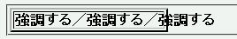

2003-03-31修正。このバグはテーブルセル要素以外でも発生します。
テーブルセル（th, td）要素の子孫任意のインライン要素に white-space: nowrap; を指定しているとき、その要素だけでなくセル内全体が折り返されずに表示されることがある。
<style type="text/css">
td strong {
white-space: nowrap;
}
</style>
<table border="2" width="50%">
<tr>
<td><strong>強調する</strong>／……／<strong>強調する</strong></td>
</tr>
</table>
| 強調する／強調する／強調する／強調する／強調する／強調する |
文字列「強調する」は折り返さず、「／」の前後だけで折り返されることを想定しています。
WinIE6.0での表示（標準モード）
Moz1.0での表示（標準モード）
折り返しが行われるべき場所に空白類文字を挿入するとこのバグを回避できます。
<table border="2" width="50%"> <tr> <td><strong>強調する</strong>／ <strong>強調する</strong>……</td> </tr> </table>
| 強調する／ 強調する／ 強調する／ 強調する／ 強調する／ 強調する |